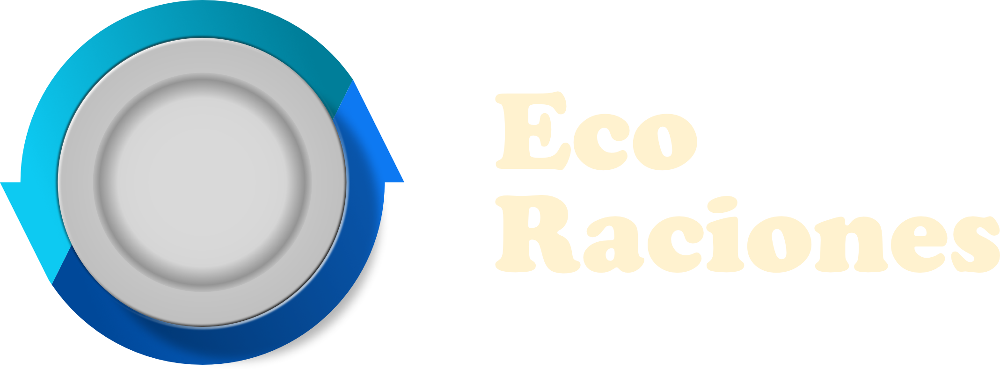
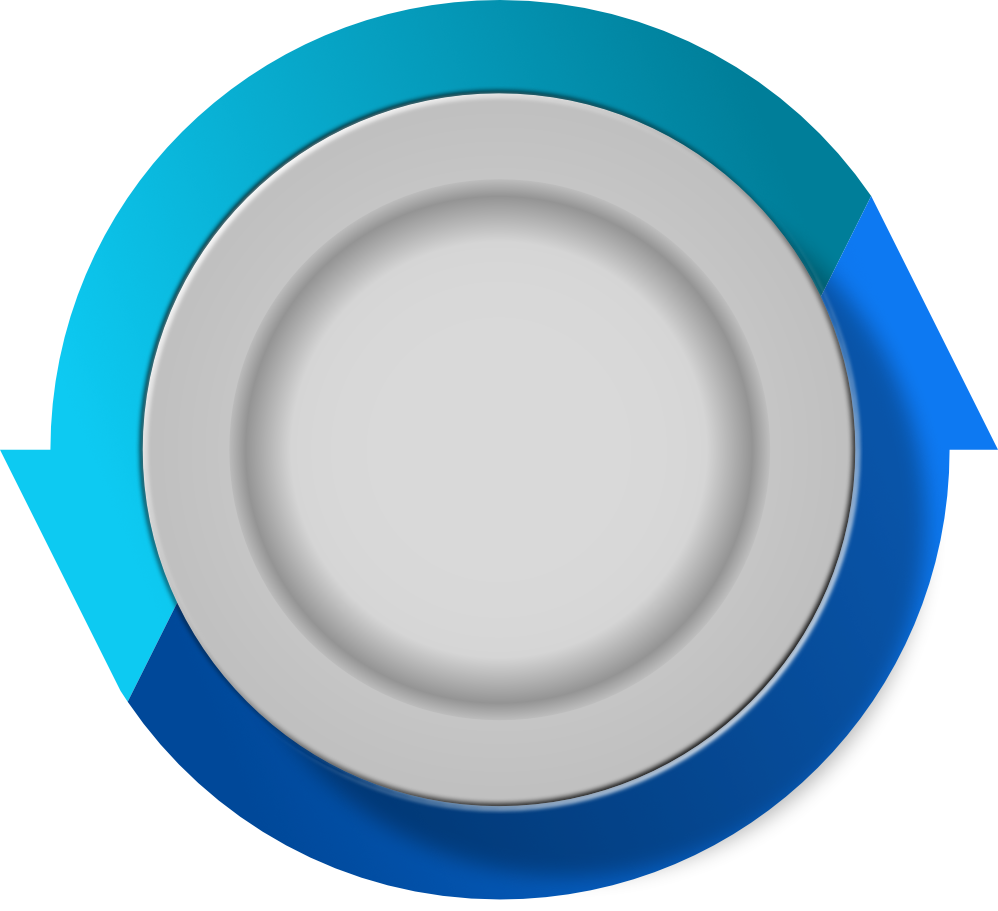

Alimentos a la vista
Una forma simple de consultar y mantener organizado el registro de alimentos de cada centro.
Una iniciativa en desarrollo
Estamos creando una herramienta para que la gestión de alimentos en centros comunitarios sea más clara, organizada y cercana.
Una idea que nace para acompañar a quienes alimentan a su comunidad cada día.
El punto de partida
Comedores y espacios comunitarios necesitan organizar lo que reciben y lo que tienen disponible. EcoRaciones quiere ayudar a que esa tarea cotidiana sea más sencilla.
Imaginamos un espacio digital que facilite el registro de alimentos y acerque a donantes y centros comunitarios, con la colaboración como punto de encuentro.
Así imaginamos la herramienta
Una herramienta con propósito
Estas son algunas de las ideas que guían el desarrollo. La aplicación todavía no está disponible para su uso.
Una forma simple de consultar y mantener organizado el registro de alimentos de cada centro.
Un espacio pensado para acompañar a donantes y encargados de alimentos en su trabajo.
La meta: que la organización ayude a aprovechar mejor los alimentos disponibles.
La experiencia y las funciones pueden cambiar mientras desarrollamos el proyecto.
Vistas de la aplicación
Estamos reservando el espacio para mostrar la aplicación real cuando esté terminada. Estas vistas todavía no son capturas ni pantallas funcionales.

Captura pendiente Reemplazar por una imagen realEstamos dando los primeros pasos
EcoRaciones todavía está en desarrollo. Por ahora, estamos trabajando en una herramienta que ayude a gestionar alimentos y haga más visible el valor de colaborar.
Volver al inicioEste sitio presenta la propuesta; no es una plataforma de registro ni de gestión.